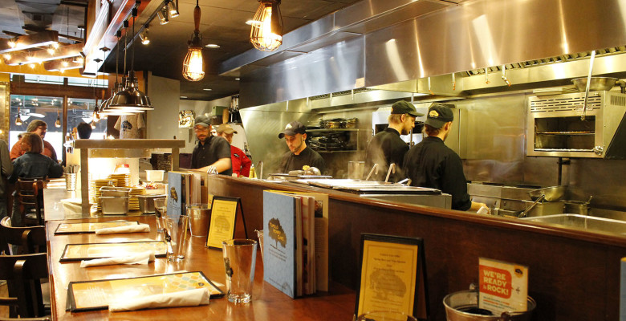
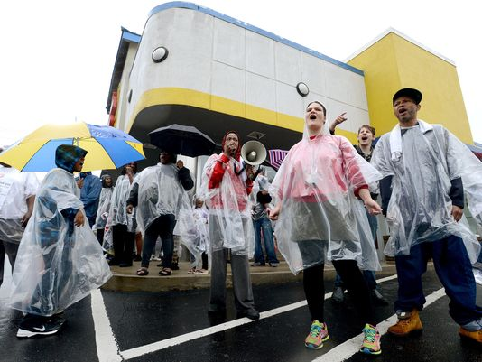
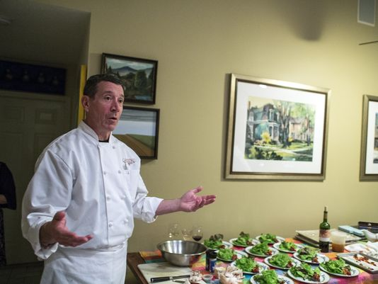

What We've Done So Far...
News, Blogs and Podcasts
 A Sweet Victory For Tupelo Honey Workers
A Sweet Victory For Tupelo Honey Workers
by Alia Todd on January 7, 2016 The United States Department of Labor Blog
Tupelo Bartender Says Wage Campaign a Success
BY EVAN DONOVAN WEDNESDAY, JANUARY 13TH 2016
 Finding Asheville blog about Asheville Sustainable Restaurant Workforce
Posted on January 22, 2016
Asheville restaurant workers unite for labor rights
Mackensy Lunsford, mlunsford@citizen-times.com 2 p.m. EDT March 27, 2015
 Restaurant workers: New face of the working class?
Mackensy Lunsford mlunsford@citizen-times.com 8:49 a.m. EDT October 12, 2015
Local food service pay declines
David Forbes, Asheville Blade 9:17 p.m. EDT May 21, 2015
 Proposed overtime pay reform has restaurant community divided
Mackensy Lunsford, mlunsford@citizen-times.com 10:30 a.m. EDT July 11, 2015
Not so sweet
by David Forbes, Asheville Blade October 12, 2015
A seat at the table: Alia Todd and Asheville Sustainable Restaurant Workforce
Posted on March 14, 2015 by Max Hunt